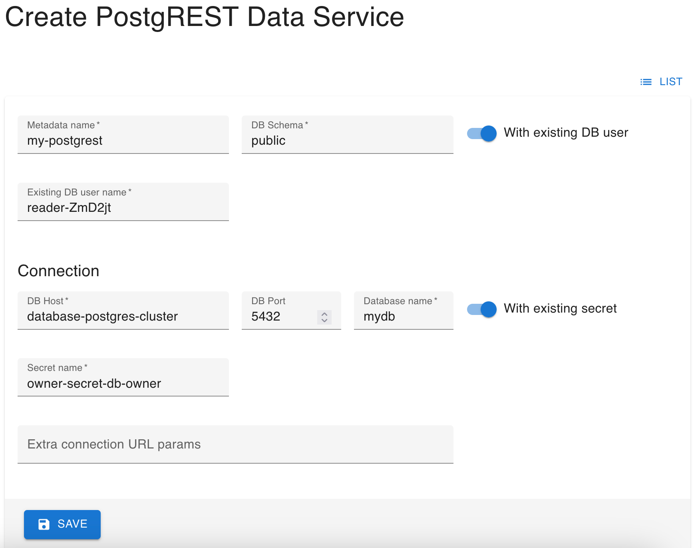

Expose data with PostgREST
We will go back to KRM to create a PostgREST service and expose the database's table via API.
Inspect users' secrets
There are a number of parameters we need to configure PostgREST. Similarly to what you did in the first stage of the scenario, go to Secrets on the left and look for the two secrets, belonging to the owner and reader users you created.
You will need the following properties, so write them down somewhere for convenience:
For the owner:
- The Name of the secret.
- DATABASE_NAME
- HOST
For the reader:
- ROLE
Creating the PostgREST service
Click PostgREST Data Services on the left and then Create.
Fill the first few fields as follows:
Name: Anything you'd like, it's once again an identifier for Kubernetes.Schema:public- Toggle on
With existing DB user. Existing DB user name: Value of the reader's secret ROLE.
Under Connection, fill the fields as follows:
DB Host: Value of the owner's secret HOST.DB Port:5432. In case the host's value contains the port, remove it from there (delete the:symbol) and put it here.Database name: Value of the owner's secret DATABASE_NAME.- Toggle on
With existing secret. Secret name: The Name of the owner's secret.
When you hit Save, the PostgREST instance will be launched!
